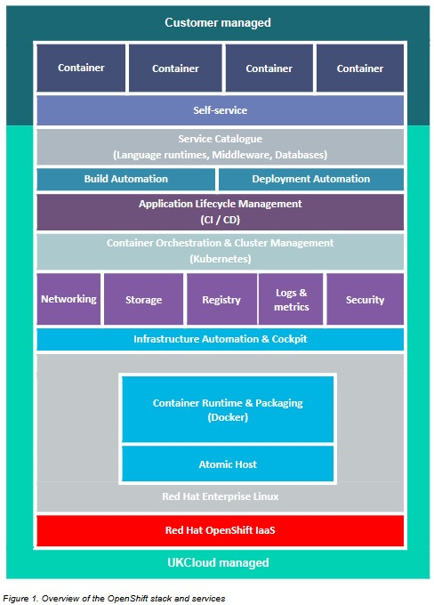
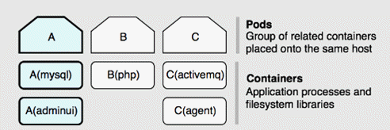

Getting Started Guide for UKCloud for OpenShift
Overview
UKCloud for OpenShift delivers a secure, private deployment of Red Hat™ OpenShift deployed on an assured, trusted platform connected to the internet and to public sector networks, including PSN, N3 and Janet.
UKCloud provides a fully provisioned, single-tenant OpenShift instance to each customer, enabling developers to totally focus on delivering business value, without having to worry about any infrastructure considerations.
This Getting Started Guide provides an overview of the functionality available with UKCloud for OpenShift and includes links to OpenShift documentation for further detail.
Intended audience
This guide is intended for developers who want to leverage the benefits of Docker and Kubernetes containerisation technologies as part of their development, continuous integration or continuous delivery cycles.
Introduction to UKCloud for OpenShift
IT projects are traditionally complex, requiring careful management of server hardware, storage, networking, operating systems, middleware, as well as development of the actual application. UKCloud for OpenShift removes complexity and enables you to focus on creating business value through development, testing and scaling of your applications.
UKCloud deploys, scales and monitors the platform, which frees up your DevOps resource to focus on adding value further up the stack --- for example, in automated software testing or tuning autoscaling.

You can use UKCloud for OpenShift to:
Host front-end web applications services to ensure that your environment:
- Can scale to handle any demands placed on it
- Will auto-heal in the event of problems to maintain high levels of availability
Create an Internet of Things (IoT) endpoint enabling internet devices to talk to your cloud applications, with all the benefits described above
Provide an elastic analytics platform for capturing and analysing machine data and social media feeds, to generate valuable intelligence such as sentiment analysis
Support modern microservice architecture and bring manageability and scalability to your applications
UKCloud-deployed Red Hat OpenShift Container Platform
OpenShift Container Platform is an open source PaaS, developed and supported by Red Hat and based around common technologies such as Docker containers and the Kubernetes container cluster manager for enterprise application development.
UKCloud for OpenShift provides a full Red Hat OpenShift Container Platform that has been deployed by UKCloud and is ready to consume without delay. We deploy an OpenShift project in which you can run multiple pods, with each pod containing a group of related Docker containers.

OpenShift documentation: Architecture and Container Security Guide
Before you begin
To complete the steps in this guide, you must have access to an OpenShift environment, along with an internet-enabled device capable of running an HTML5 capable browser.
As part of your onboarding, UKCloud will provide you with a URL and credentials to access your OpenShift environment.
In addition, we recommend the installation of the OpenShift CLI on your device.
OpenShift documentation: Get Started with the CLI
Initial environment
UKCloud will provision you with an OpenShift Starter Pack, providing you with 32GiB of container resources to deploy your applications.
You can expand the Starter Pack in increments of 16GiB, to a maximum OpenShift environment of 176GiB. These Expansion Packs are deployed by UKCloud via a service request within the UKCloud Portal.
Using the web console
The OpenShift Container Platform web console is a user interface accessible from a web browser. Developers can use the web console to visualize, browse, and manage the contents of projects.
OpenShift documentation: Web Console Walkthrough
Using the command-line interface
With the OpenShift Container Platform command line interface (CLI), you can create applications and manage OpenShift Container Platform projects from a terminal.
OpenShift documentation: Basic Walkthrough Using the CLI and CLI Reference
Using the API
The OpenShift Container Platform distribution of Kubernetes includes the Kubernetes v1 REST API and the OpenShift v1 REST API. These are RESTful APIs accessible via HTTP(s) on the OpenShift Container Platform master servers.
These REST APIs can be used to manage end-user applications, the cluster, and the users of the cluster.
OpenShift documentation: REST API Reference
Developing and deploying applications
OpenShift Container Platform is designed for building and deploying applications. You can begin your application's development from scratch using OpenShift Container Platform directly or develop locally then use OpenShift Container Platform to deploy your fully developed application.
OpenShift documentation: Developer Guide
Creating and using images
Containers in OpenShift Container Platform are based on Docker-formatted container images. An image is a binary that includes all the requirements for running a single container, as well as metadata describing its needs and capabilities. Containers only have access to resources defined in the image unless you give the container additional access when creating it.
OpenShift documentation: Creating images and Using images
Next steps
In this Getting Started Guide, you've learned the basics about UKCloud for OpenShift. For more information, see the OpenShift documentation at:
Glossary
This section provides a glossary of terms specific to UKCloud for OpenShift.
cluster One or more masters and a set of nodes.
container A lightweight mechanism for isolating running processes so that they are limited to interacting with only their designated resources
Docker A software container platform for building and managing containerised applications.
image A binary that includes all of the requirements for running a single container, as well as metadata describing its needs and capabilities.
Kubernetes Manages containerized applications across a set of containers or hosts and provides mechanisms for deployment, maintenance, and application-scaling.
master server The host or hosts that contain the master components, including the API server, controller manager server, and etcd. The master manages nodes in its Kubernetes cluster and schedules pods to run on nodes.
microservices A method of developing an application as a collection of smaller independent services.
node Provides the runtime environment for a container. Each node in a Kubernetes cluster has the required services to be managed by the master. Nodes also have the required services to run pods, including the Docker service, a kubelet, and a service proxy.
OpenShift Red Hat's secure and comprehensive enterprise-grade container platform based on industry standards, Docker and Kubernetes.
PaaS Platform-as-a-Service. The capability provided to the consumer is to deploy onto the cloud infrastructure consumer-created or acquired applications created using programming languages, libraries, services, and tools supported by the provider. The consumer does not manage or control the underlying cloud infrastructure including network, servers, operating systems, or storage, but has control over the deployed applications and possibly configuration settings for the application-hosting environment.
pod A group of related containers placed onto the same host.
Feedback
If you have any comments on this document or any other aspect of your UKCloud experience, send them to products@ukcloud.com.